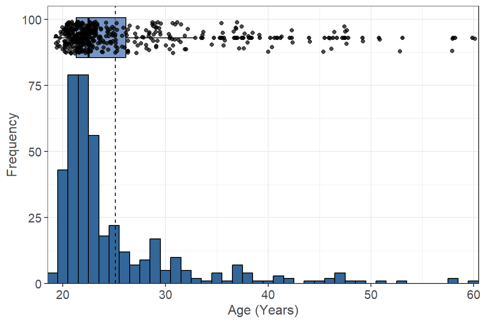
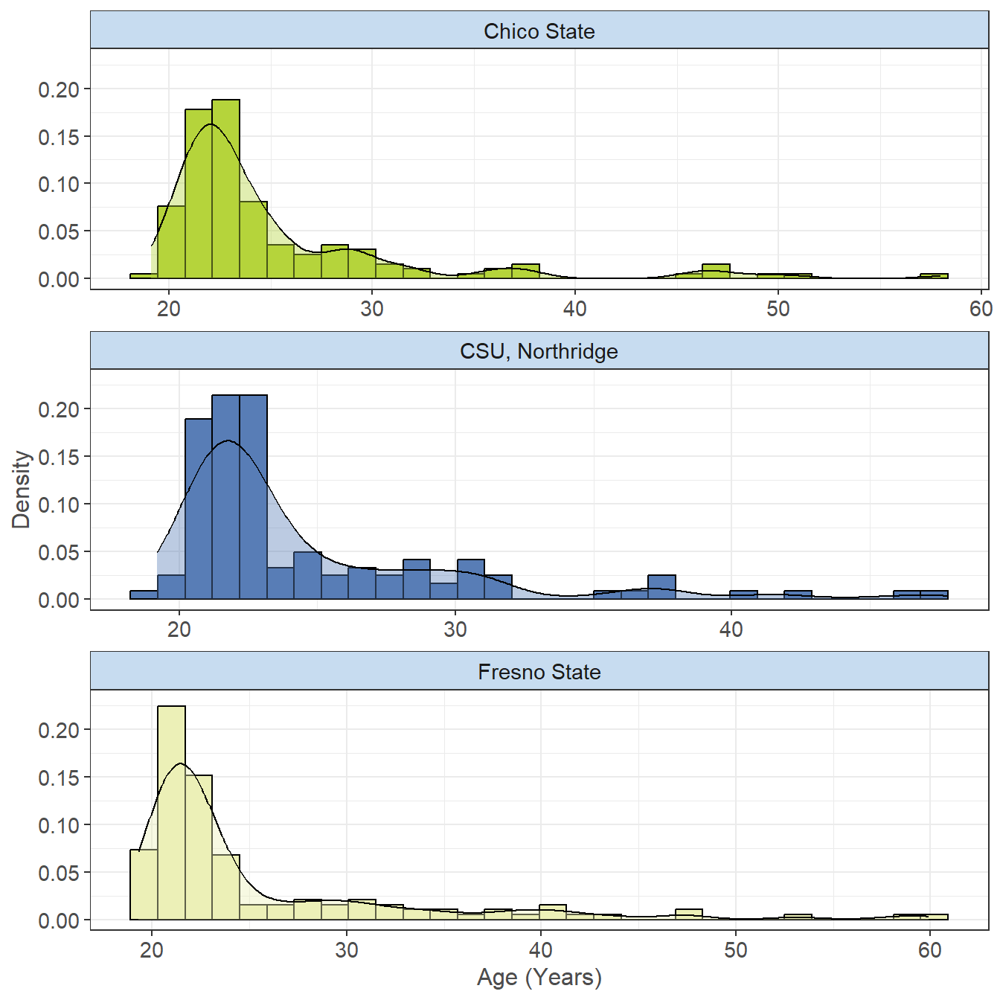
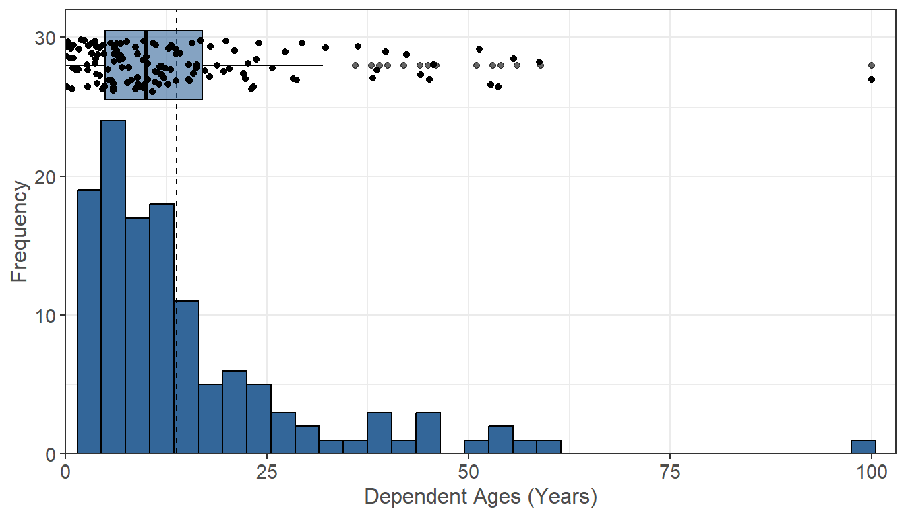
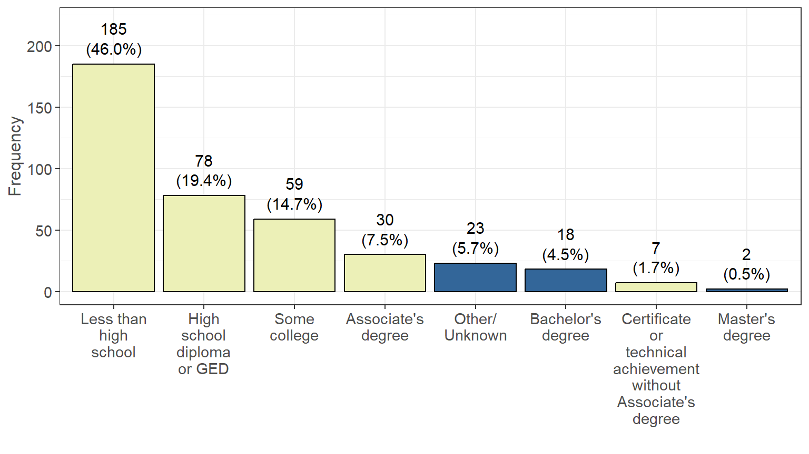
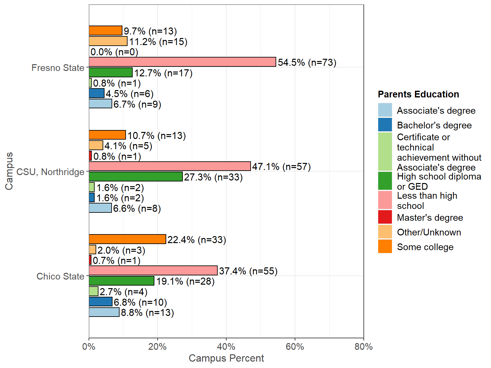
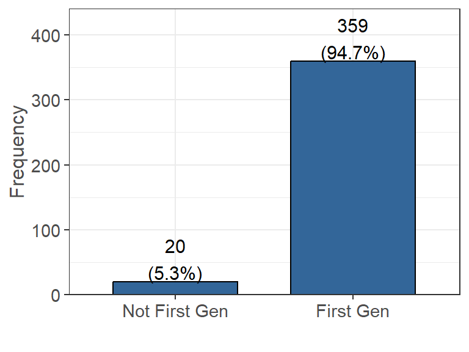

Personal Demographics
The following set of questions were asked in regards to the students’ personal demographics. This includes the students’ age at the time of the survey (2020), ethnicities they identify as, and the number of dependents they are responsible for taking care of. They were also asked about parents’ education, which will help us identify first generation college students based on certain criteria.
Age
The following was determined by taking the difference between birth date and the time at which the survey was completed (n=394, 98% of 402 reporting).  Figure 1.1: Student Age Distribution
The age for participants in the survey range from 20.1 to 60.9 at the time of completion, with the majority of participants being between 20-30 years old. The average age of a participant in this survey is 25.2 years old.
üè´ üìä Campus Breakdown
Click here for campus breakdown of age distribution.
 Figure 1.2: Age Distribution by Campus
Breaking down age across each campus, the data indicates that the distribution are very similar for each. Chico State has an average age of 25.34 years old, and a median of 23.2 years old. Fresno State has an average age of 24.74 years old, and a median of 22.65 years old. CSU, Northridge has an average age of 25.39 years old, and a median of 22.3 years old.Gender Identity
What is your gender identity? (n=391, 97% of 402 reporting).

Figure 1.3: Student Gender Identity
Of the survey participants, 237 of them identify as a woman, 152 identify as a man, and 2 identify as gender non-binary, non-conforming. There are also survey participants who preferred not to answer.
üè´ üìä Campus Breakdown
Click here for campus breakdown of gender distribution.

Figure 1.4: Gender Identification by Campus
The breakdown of the distribution for gender across each campuses indicates that the majority of survey participants are female. Chico State seems to have the highest number of participants for each gender, Fresno State has the highest proportion of female survey participants, and CSU, Northridge has the highest proportion of male survey participants.Ethnicity
In the US Census, Hispanic Origins are not races. Do you identify as Hispanic or Latino or Spanish Origin? (n=386, 96% of 402 reporting).

Figure 1.5: Hispanic Origin Identification
We define Hispanic Origin to include: Mexican, Mexican American, Chicano, Puerto Rican, or another Hispanic/Latino/Spanish origin. The data indicates that the majority of survey participants identify as some type of Hispanic Origins (275 people), while around a quarter of them do not identify as having Hispanic Origins (111 people).
üè´ üìä Campus Breakdown
Click here for campus breakdown of ethnicity distribution.
 Figure 1.6: Hispanic Origin Identification by Campus
Figure 1.6: Hispanic Origin Identification by Campus
Race
What race do you identify as? Select all that apply (n=248, 62% of 402 reporting). Note that races were collapsed from an original 14 options down to 5 broad groups defined by census.gov.
Table 1.1: Student Race Identification| Yes (%) | |
|---|---|
| Black or African American | 147 (60.2%) |
| White | 136 (55.7%) |
| Native Hawaiian and Other Pacific Islander | 59 (24.2%) |
| American Indian and Alaska Native | 24 (9.8%) |
| Asian | 24 (9.8%) |
üè´ üìä Campus Breakdown
Click here for campus breakdown of race distribution.
| Chico State | CSU, Northridge | Fresno State | |
|---|---|---|---|
| White | 38 (29.7%) | 43 (37.1%) | 55 (37.7%) |
| Black or African American | 53 (41.4%) | 40 (34.5%) | 54 (37.0%) |
| American Indian and Alaska Native | 9 (7.0%) | 10 (8.6%) | 5 (3.4%) |
| Asian | 7 (5.5%) | 11 (9.5%) | 6 (4.1%) |
| Native Hawaiian and Other Pacific Islander | 21 (16.4%) | 12 (10.3%) | 26 (17.8%) |
Table 1.2: Race Identification by Campus
For survey participants at each campus, the data indicates that over 50% identify as White for each. Both Chico State and Fresno State have their next most common ethnicity being Other Asian. CSU, Northridge had its second most common ethnicity being American Indian, closely followed by African American.Dependents
If you have dependents, then how many of them receive more than 50% of their financial support from you? (n=384, 96% of 402 reporting). Figure 1.7: Number of Dependents
The majority of survey participants claim to have 0 dependents (311 people). 40 survey participants claim to have only 1 dependent, and only 33 claim to have 2 or more dependents.
Dependent Ages
What is/are the age(s) of these dependent(s)?  Figure 1.8: Dependent Age Distribution
From figure 1.8, the data indicates that the majority of dependents are under the age of 18. The ages of these dependents ranges from 0 to 100 with a standard deviation of 14.18. The average age for a dependent is 12.82 while the median age is 9. The most common dependent age is 6 years old, with 12 parents having dependents of this age.
Parents Education
What is the highest level of education completed by your parents/guardians? (n=389, 97% of 402 reporting).  Figure 1.9: Parents Highest Education
Note: Variables filled with yellow above are used to show the conditions used to build the First Generation variable.
The highest level of education completed by most survey participants parents is “Less than high school” (181). 75 survey participants claim their parents highest level is “High school diploma or GED”, and 55 claim their parents highest level is “Some college”. Only a minority of survey participants have parents who have some type of college level degree.
üè´ üìä Campus Breakdown
Click here for campus breakdown of parents education distribution.
 Figure 1.10: Parents Highest Education by Campus
Breaking down parents education for each campus, the data indicates that Chico State has the highest number of students with parents that have some type of college degree or education (Associate’s, Bachelor’s, Master’s, Some college). Fresno State has the highest proportion of survey participants with parents whose education is less than high school. CSU, Northridge has the highest proportion of students parents who have a high school diploma or GED.
First Generation
Note: students with parents education identified as “Other/Unknown” were not marked as first gen or not since they could not be determined. (n=366, 91% of 402 reporting).

Figure 1.11: First Generation College Students
According to figure 1.11, we can see that 347 survey participants are considered as First Generation College students and 19 survey participants are not considered First Generation College students.
As defined by the University of California, we define first generation students as “working to be part of the first generation in their families to earn a four-year university degree”. This means based upon parents education, students in the data set are considered first generation if their parents do not have a Bachelor’s or Master’s degree from a four-year university. From the Parents Education graph, all bars highlighted as yellow are considered first gen, while all bars in blue are not (excluding Other/Unknown).
üè´ üìä Campus Breakdown
Click here for campus breakdown of first generation student distribution.
Figure 1.12: First Generation College Students by Campus
Breaking down first generation students for each campus, the data indicates that even though Chico State has the highest number of first generation college students, they also have the lowest proportion of first generation college students. CSU, Northridge has the highest proportion of first generation college students, as well as the lowest proportion of students who are not considered first gen.Student Demographics
Click here to go to the Student Demographics page.